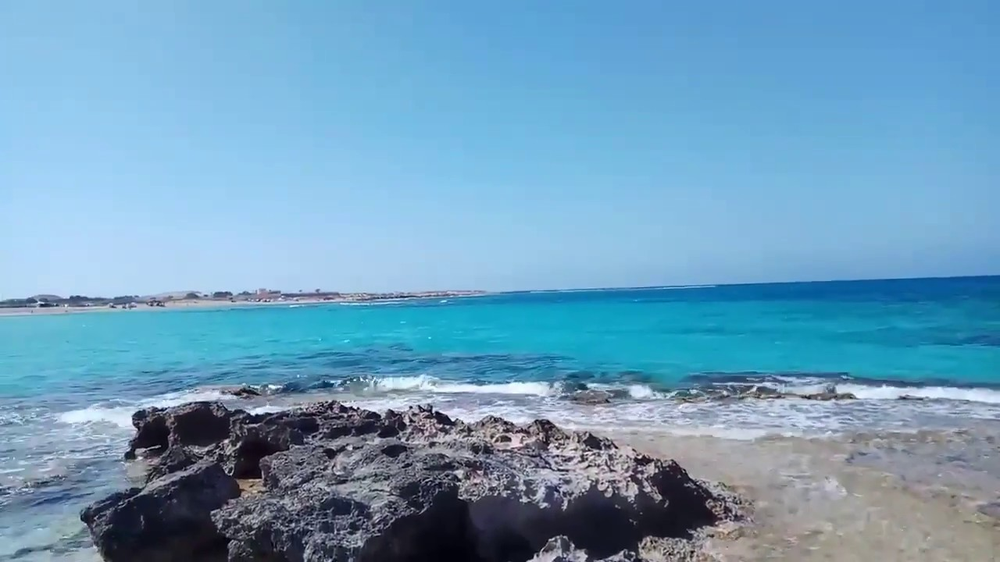

Love Beach is a beach about 17 km away from the city of Marsa Matrouh
and is its largest beach. It became famous after Laila Murad sang a
romantic song at one of its rocks during the events of the movie Love
Beach, which was released in 1953. Since then, the beach has acquired
the name Love Beach in reference to the movie. The beach is considered
an important tourist landmark in the city of Marsa Matrouh and
receives dozens of tourists every day to enjoy its pure turquoise
waters and white sand.
Agiba Beach is a beach 24 km west of Marsa Matrouh in Egypt, which is
distinguished by its blue waters. Agiba beach This beach is located in
front of a giant rock, where people walk to enjoy this wonderful scene
that is distinguished among the beaches of the world, and there are
some rocks on the sands of the beach in a wonderful view, they sit on
them and visitors take pictures, so that nature appears behind them,
and these rocks are lit whenever they extend into the water .
Mubarak Beach is considered one of the best beaches in Matrouh. It has
a beautiful and exciting atmosphere and is characterized by the
presence of all means of entertainment, simplicity and serenity.It is
characterized by the clarity of the water, the presence of sand games,
and many ways to enjoy the time

Mina Hashish Beach in Marsa Matruh is one of the pure pristine
beaches, characterized by the beauty of nature, from the wonderful
turquoise waters and stunning rocky scenery that surrounds the beach
from the outside from the parties. Crowds in the city center, in a
calm atmosphere of pleasant coastal weather during the day, and a
large number of vacationers, to enjoy the sea and bathe in it,
Lagoon Beach is located on the Laguna Dahab or the Blue Lagoon in
Dahab. It is a sand and gravel beach that offers charming landscapes,
especially at sunrise and sunset. It is visited by many tourists to
practice various sports and water activities, such as boating,
swimming, snorkeling, playing beach ball, etc., in addition to lying
down. And gaining an attractive tan, and a group of restaurants, cafes
and high-end hotels spread along the beach that provide the most
beautiful views of the lake.
Al Hana Beach in the city of Marsa Matrouh is considered one of the
most beautiful beaches in the Matrouh Resort, as it is popular with
vacationers, especially since it is one of the beaches that attracts
families with young children, due to the low sea level there, and the
presence of places that allow children, women, the elderly, and all
those who do not know how to stay. Swimming in the sea, in light of
the calm atmosphere on the beach and moderate weather,
Sharm El Luli, also known as Hankorab, is a beach located 60 km south
of Marsa Alam in the Red Sea Governorate, located within the Wadi El
Gemal Reserve. In 2018, Trip Advisor ranked it among the 25 best
beaches in the world and the first in the Middle East. It is a popular
destination for foreign tourists, especially of French, German,
English and Italian nationalities
Its waters are fairly shallow, which encourages swimming. It has a
wonderful panoramic view, so it is the destination of many tourists
from different countries of the world. Near the beach there are food
kiosks selling drinks and snacks, and there are also places to rent
snorkeling equipment and fins.
Dream Beach is one of the most important open beaches in the city of
Tartous, which makes you feel very comfortable when you visit it. It
allows visitors to do many activities full of fun, entertainment and
activity, where you can practice most water sports, the most important
of which are swimming, diving, rowing, sailing, fishing and water
skiing. There are also some restaurants and cafes on the beach that
offer different types of food and drink.

The city is characterized by many distinguished tourist and sporting
activities, as it is considered a destination for sports enthusiasts
in general, especially skydiving and mountain climbing for surfing and
sailboat enthusiasts. The reason for this is due to the speed of the
winds; Because it is surrounded by mountains from several directions,
which leads to the presence of low pressure in many places, in
addition to the presence of high pressure in other places, tourists
and visitors to it also enjoy its mountainous and desert nature, as
well as its moderate climate, and this city is famous for containing
many villages. Tourist and hotels vary in level, and they also contain
kiosks made of wood and palm leaves.
Sharm El-Sheikh (in English: Sharm El Sheikh) is an Egyptian city
located in the South Sinai Governorate, and it is a coastal city
overlooking the Red Sea,[1] and its coast is filled with bays from
which the name of the city came; Where the word "Sharm" means a bay,
and thus the name of the city becomes "Sheikh's Bay", [2] As for the
name of the city in English "Solomon's Bay", it refers to King
Solomon's fleet, which is believed to have passed through the Strait
of Tiran on its way from the port of Etzion Jaber in The Gulf of Aqaba
to the land of Ophir mentioned in the Bible. [1] Other names by which
the city is called are the City of Peace and the Jewel of Sinai. Sharm
El Sheikh is famous for being a first-class tourist city. As there are
many hotels and tourist beaches, and tourists from all over the world
flock to it annually.
El Gouna is distinguished by being a site for deep diving and various
water sports. The resort has two main beaches: “Zaytouna Beach” and
“Mangroovy Beach.” The resort is interspersed with a large number of
water channels, making every house, villa, or chalet in the resort its
own beach, and most of these The water canals were built with small
stone bridges to facilitate movement. There are 6 neighborhoods in El
Gouna: “Marina Town,” “Mediterranean Neighborhood,” “Golf
Neighborhood,” “Nubian Neighborhood,” “Hadaba Neighborhood,” and
“Italian Neighborhood.” There are also three main central areas in El
Gouna, in which there are homes, shops, shopping areas, bars,
restaurants and night clubs: the Downtown area.